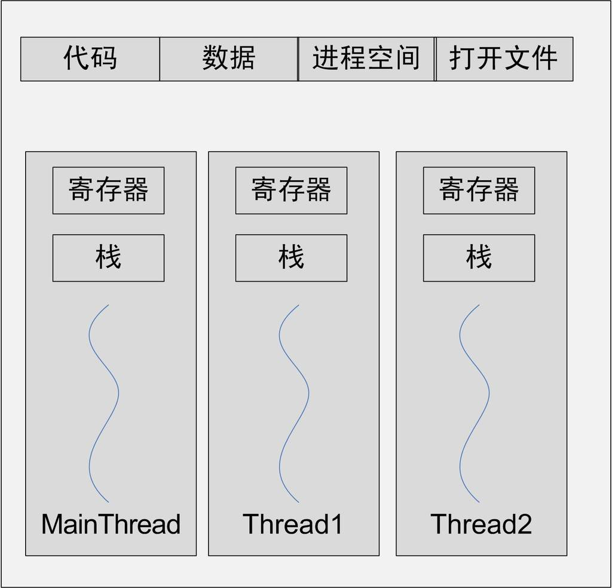
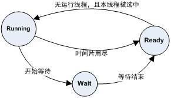
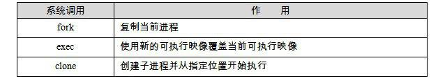
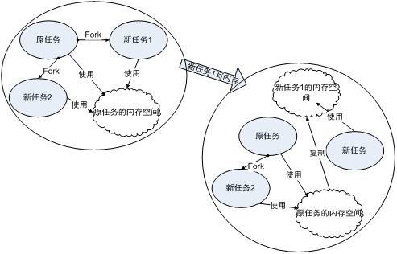
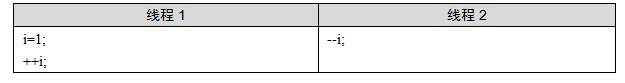
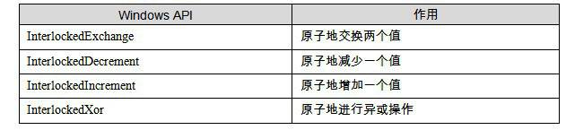
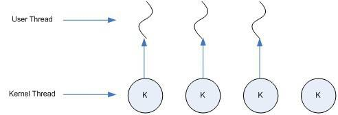
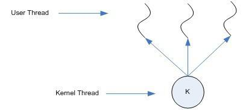
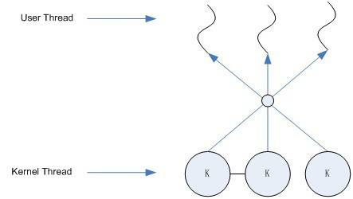

1.6 眾人拾柴火焰高
1.6.1 執行緒基礎
現代軟體系統中，除了程式之外，執行緒也是一個十分重要的概念。特別是隨著CPU頻率增長開始出現停滯，而開始向多核方向發展。多執行緒，作為實現軟體並發執行的一個重要的方法，也開始具有越來越重要的地位。我們將在這一節回顧執行緒相關的內容，包括執行緒的概念、執行緒的排程、執行緒安全、使用者執行緒與核心執行緒之間的對映關係。雖然執行緒相關的概念與本書的內容並不是十分相關，但是我們相信深刻地理解執行緒對於更加深入地理解載入、動態連結和執行庫，特別是執行庫與多執行緒相關部分的內容會有很大的幫助。
什麼是執行緒
執行緒（Thread），有時被稱為輕量級程式（Lightweight Process, LWP），是程式執行流的最小單元。一個標準的執行緒由執行緒ID、當前指令指標（PC）、暫存器集合和堆疊組成。通常意義上，一個程式由一個到多個執行緒組成，各個執行緒之間共享程式的記憶體空間（包括程式碼段、資料段、堆等）及一些程式級的資源（如開啟檔案和訊號）。一個經典的執行緒與程式的關係如圖1-8所示。

大多數軟體應用中，執行緒的數量都不止一個。多個執行緒可以互不幹擾地並發執行，並共享程式的全域性變數和堆的資料。那麼，多個執行緒與單執行緒的程式相比，又有哪些優勢呢？通常來說，使用多執行緒的原因有如下幾點。
某個操作可能會陷入長時間等待，等待的執行緒會進入睡眠狀態，無法繼續執行。多執行緒執行可以有效利用等待的時間。典型的例子是等待網路響應，這可能要花費數秒甚至數十秒。
某個操作（常常是計算）會消耗大量的時間，如果只有一個執行緒，程式和使用者之間的互動會中斷。多執行緒可以讓一個執行緒負責互動，另一個執行緒負責計算。
程式邏輯本身就要求並發操作，例如一個多端下載軟體（例如Bittorrent）。
多CPU或多核計算機（基本就是未來的主流計算機），本身具備同時執行多個執行緒的能力，因此單執行緒程式無法全面地發揮計算機的全部計算能力。
相對於多程式應用，多執行緒在資料共享方面效率要高很多。
執行緒的訪問許可權
執行緒的訪問非常自由，它可以訪問程式記憶體裡的所有資料，甚至包括其他執行緒的堆疊（如果它知道其他執行緒的堆疊地址，那麼這就是很少見的情況），但實際運用中執行緒也擁有自己的私有儲存空間，包括以下幾方面。
棧（盡管並非完全無法被其他執行緒訪問，但一般情況下仍然可以認為是私有的資料）。
執行緒區域性儲存（Thread Local Storage, TLS）。執行緒區域性儲存是某些作業系統為執行緒單獨提供的私有空間，但通常只具有很有限的容量。
暫存器（包括PC暫存器），暫存器是執行流的基本資料，因此為執行緒私有。
從C程式設計師的角度來看，資料線上程之間是否私有如表1-1所示。
表1-1 …
執行緒排程與優先順序
不論是在多處理器的計算機上還是在單處理器的計算機上，執行緒總是“並發”執行的。當執行緒數量小於等於處理器數量時（並且作業系統支援多處理器），執行緒的並發是真正的並發，不同的執行緒執行在不同的處理器上，彼此之間互不相幹。但對於執行緒數量大於處理器數量的情況，執行緒的並發會受到一些阻礙，因為此時至少有一個處理器會執行多個執行緒。
在單處理器對應多執行緒的情況下，並發是一種模擬出來的狀態。作業系統會讓這些多執行緒程式輪流執行，每次僅執行一小段時間（通常是幾十到幾百毫秒），這樣每個執行緒就“看起來”在同時執行。這樣的一個不斷在處理器上切換不同的執行緒的行為稱之為執行緒排程（Thread Schedule）。線上程排程中，執行緒通常擁有至少三種狀態，分別是：
執行（Running）：此時執行緒正在執行。
就緒（Ready）：此時執行緒可以立刻執行，但CPU已經被佔用。
等待（Waiting）：此時執行緒正在等待某一事件（通常是I/O或同步）發生，無法執行。
處於執行中執行緒擁有一段可以執行的時間，這段時間稱為時間片（Time Slice），當時間片用盡的時候，該程式將進入就緒狀態。如果在時間片用盡之前程式就開始等待某事件，那麼它將進入等待狀態。每當一個執行緒離開執行狀態時，排程系統就會選擇一個其他的就緒執行緒繼續執行。在一個處於等待狀態的執行緒所等待的事件發生之後，該執行緒將進入就緒狀態。這3個狀態的轉移如圖1-9所示。

執行緒排程自多工作業系統問世以來就不斷地被提出不同的方案和演算法。現在主流的排程方式盡管各不相同，但都帶有優先順序排程（Priority Schedule）和輪轉法（Round Robin）的痕跡。所謂輪轉法，即是之前提到的讓各個執行緒輪流執行一小段時間的方法。這決定了執行緒之間交錯執行的特點。而優先順序排程則決定了執行緒按照什麼順序輪流執行。在具有優先順序排程的系統中，執行緒都擁有各自的執行緒優先順序（Thread Priority）。具有高優先順序的執行緒會更早地執行，而低優先順序的執行緒常常要等待到系統中已經沒有高優先順序的可執行的執行緒存在時才能夠執行。在Windows中，可以透過使用：
BOOL WINAPI SetThreadPriority(HANDLE hThread, int nPriority);
來設定執行緒的優先順序，而Linux下與執行緒相關的操作可以透過pthread庫來實現。
在Windows和Linux中，執行緒的優先順序不僅可以由使用者手動設定，系統還會根據不同執行緒的表現自動調整優先順序，以使得排程更有效率。例如通常情況下，頻繁地進入等待狀態（進入等待狀態，會放棄之後仍然可佔用的時間份額）的執行緒（例如處理I/O的執行緒）比頻繁進行大量計算、以至於每次都要把時間片全部用盡的執行緒要受歡迎得多。其實道理很簡單，頻繁等待的執行緒通常只佔用很少的時間，CPU也喜歡先捏軟柿子。我們一般把頻繁等待的執行緒稱之為IO密集型執行緒（IO Bound Thread），而把很少等待的執行緒稱為CPU密集型執行緒（CPU Bound Thread）。IO密集型執行緒總是比CPU密集型執行緒容易得到優先順序的提升。
在優先順序排程下，存在一種餓死（Starvation）的現象，一個執行緒被餓死，是說它的優先順序較低，在它執行之前，總是有較高優先順序的執行緒試圖執行，因此這個低優先順序執行緒始終無法執行。當一個CPU密集型的執行緒獲得較高的優先順序時，許多低優先順序的程式就很可能餓死。而一個高優先順序的IO密集型執行緒由於大部分時間都處於等待狀態，因此相對不容易造成其他執行緒餓死。為了避免餓死現象，排程系統常常會逐步提升那些等待了過長時間的得不到執行的執行緒的優先順序。在這樣的手段下，一個執行緒只要等待足夠長的時間，其優先順序一定會提高到足夠讓它執行的程度。
讓我們總結一下，在優先順序排程的環境下，執行緒的優先順序改變一般有三種方式。
使用者指定優先順序。
根據進入等待狀態的頻繁程度提升或降低優先順序。
長時間得不到執行而被提升優先順序。
可搶佔執行緒和不可搶佔執行緒
我們之前討論的執行緒排程有一個特點，那就是執行緒在用盡時間片之後會被強製剝奪繼續執行的權利，而進入就緒狀態，這個過程叫做搶佔（Preemption），即之後執行的別的執行緒搶佔了當前執行緒。在早期的一些系統（例如Windows 3.1）裡，執行緒是不可搶佔的。執行緒必須手動發出一個放棄執行的命令，才能讓其他的執行緒得到執行。在這樣的排程模型下，執行緒必須主動進入就緒狀態，而不是靠時間片用盡來被強製進入。如果執行緒始終拒絕進入就緒狀態，並且也不進行任何的等待操作，那麼其他的執行緒將永遠無法執行。在不可搶佔執行緒中，執行緒主動放棄執行無非兩種情況。
當執行緒試圖等待某事件時（I/O等）。
執行緒主動放棄時間片。
因此，在不可搶佔執行緒執行的時候，有一個顯著的特點，那就是執行緒排程的時機是確定的，執行緒排程只會發生線上程主動放棄執行或執行緒等待某事件的時候。這樣可以避免一些因為搶佔式執行緒裡排程時機不確定而產生的問題（見下一節：執行緒安全）。但即使如此，非搶佔式執行緒在今日已經十分少見。
Linux的多執行緒
Windows對程式和執行緒的實現如同教科書一般標準，Windows核心有明確的執行緒和程式的概念。在Windows API中，可以使用明確的API：CreateProcess和CreateThread來建立程式和執行緒，並且有一係列的API來操縱它們。但對於Linux來說，執行緒並不是一個通用的概念。
Linux對多執行緒的支援頗為貧乏，事實上，在Linux核心中並不存在真正意義上的執行緒概念。Linux將所有的執行實體（無論是執行緒還是程式）都稱為任務（Task），每一個任務概念上都類似於一個單執行緒的程式，具有記憶體空間、執行實體、檔案資源等。不過，Linux下不同的任務之間可以選擇共享記憶體空間，因而在實際意義上，共享了同一個記憶體空間的多個任務構成了一個程式，這些任務也就成了這個程式裡的執行緒。在Linux下，用以下方法可以建立一個新的任務，如表1-2所示。

fork函式產生一個和當前程式完全一樣的新程式，並和當前程式一樣從fork函式裡返回。例如如下程式碼：
pid_t pid;
if (pid = fork())
{
….
}
在fork函式呼叫之後，新的任務將啟動並和本任務一起從fork函式返回。但不同的是本任務的fork將返回新任務pid，而新任務的fork將返回0。
fork產生新任務的速度非常快，因為fork並不複製原任務的記憶體空間，而是和原任務一起共享一個寫時複製（Copy on Write, COW）的記憶體空間（見圖1-10）。所謂寫時複製，指的是兩個任務可以同時自由地讀取記憶體，但任意一個任務試圖對記憶體進行修改時，記憶體就會複製一份提供給修改方單獨使用，以免影響到其他的任務使用。
fork只能夠產生本任務的映象，因此需要使用exec配合才能夠啟動別的新任務。exec可以用新的可執行映像替換當前的可執行映像，因此在fork產生了一個新任務之後，新任務可以呼叫exec來執行新的執行檔。fork和exec通常用於產生新任務，而如果要產生新執行緒，則可以使用clone。clone函式的原型如下：
int clone(int (*fn)(void*), void* child_stack, int flags, void* arg);

使用clone可以產生一個新的任務，從指定的位置開始執行，並且（可選的）共享當前程式的記憶體空間和檔案等。如此就可以在實際效果上產生一個執行緒。
1.6.2 執行緒安全
多執行緒程式處於一個多變的環境當中，可訪問的全域性變數和堆資料隨時都可能被其他的執行緒改變。因此多執行緒程式在並發時資料的一致性變得非常重要。
競爭與原子操作
多個執行緒同時訪問一個共享資料，可能造成很惡劣的後果。下面是一個著名的例子，假設有兩個執行緒分別要執行如表1-3所示的C程式碼。

在許多體係結構上，++i的實現方法會如下：
（1）讀取i到某個暫存器X。
（2）X++。
（3）將X的內容儲存回i。
由於執行緒1和執行緒2並發執行，因此兩個執行緒的執行序列很可能如下（注意，暫存器X的內容在不同的執行緒中是不一樣的，這裡用X[1]和X[2]分別表示執行緒1和執行緒2中的X），如表1-4所示。
表1-4 …
從程式邏輯來看，兩個執行緒都執行完畢之後，i的值應該為1，但從之前的執行序列可以看到，i得到的值是0。實際上這兩個執行緒如果同時執行的話，i的結果有可能是0或1或2。可見，兩個程式同時讀寫同一個共享資料會導致意想不到的後果。
很明顯，自增（++）操作在多執行緒環境下會出現錯誤是因為這個操作被編譯為組合語言程式碼之後不止一條指令，因此在執行的時候可能執行了一半就被排程系統打斷，去執行別的程式碼。我們把單指令的操作稱為原子的（Atomic），因為無論如何，單條指令的執行是不會被打斷的。為了避免出錯，很多體係結構都提供了一些常用操作的原子指令，例如i386就有一條inc指令可以直接增加一個記憶體單元值，可以避免出現上例中的錯誤情況。在Windows裡，有一套API專門進行一些原子操作（見表1-5），這些API稱為Interlocked API。

使用這些函式時，Windows將保證是原子操作的，因此可以不用擔心出現問題。遺憾的是，盡管原子操作指令非常方便，但是它們僅適用於比較簡單特定的場合。在複雜的場合下，比如我們要保證一個複雜的資料結構更改的原子性，原子操作指令就力不從心了。這裡我們需要更加通用的手段：鎖。
同步與鎖
為了避免多個執行緒同時讀寫同一個資料而產生不可預料的後果，我們需要將各個執行緒對同一個資料的訪問同步（Synchronization）。所謂同步，既是指在一個執行緒訪問資料未結束的時候，其他執行緒不得對同一個資料進行訪問。如此，對資料的訪問被原子化了。
同步的最常見方法是使用鎖（Lock）。鎖是一種非強製機制，每一個執行緒在訪問資料或資源之前首先試圖獲取（Acquire）鎖，並在訪問結束之後釋放（Release）鎖。在鎖已經被佔用的時候試圖獲取鎖時，執行緒會等待，直到鎖重新可用。
二元訊號量（Binary Semaphore）是最簡單的一種鎖，它只有兩種狀態：佔用與非佔用。它適合只能被唯一一個執行緒獨佔訪問的資源。當二元訊號量處於非佔用狀態時，第一個試圖獲取該二元訊號量的執行緒會獲得該鎖，並將二元訊號量置為佔用狀態，此後其他的所有試圖獲取該二元訊號量的執行緒將會等待，直到該鎖被釋放。
對於允許多個執行緒並發訪問的資源，多元訊號量簡稱訊號量（Semaphore），它是一個很好的選擇。一個初始值為N的訊號量允許N個執行緒並發訪問。執行緒訪問資源的時候首先獲取訊號量，進行如下操作：
• 將訊號量的值減1。
• 如果訊號量的值小於0，則進入等待狀態，否則繼續執行。
訪問完資源之後，執行緒釋放訊號量，進行如下操作：
• 將訊號量的值加1。
• 如果訊號量的值小於1，喚醒一個等待中的執行緒。
互斥量（Mutex）和二元訊號量很類似，資源僅同時允許一個執行緒訪問，但和訊號量不同的是，訊號量在整個系統可以被任意執行緒獲取並釋放，也就是說，同一個訊號量可以被系統中的一個執行緒獲取之後由另一個執行緒釋放。而互斥量則要求哪個執行緒獲取了互斥量，哪個執行緒就要負責釋放這個鎖，其他執行緒越俎代庖去釋放互斥量是無效的。
臨界區（Critical Section）是比互斥量更加嚴格的同步手段。在術語中，把臨界區的鎖的獲取稱為進入臨界區，而把鎖的釋放稱為離開臨界區。臨界區和互斥量與訊號量的區別在於，互斥量和訊號量在系統的任何程式裡都是可見的，也就是說，一個程式建立了一個互斥量或訊號量，另一個程式試圖去獲取該鎖是合法的。然而，臨界區的作用範圍僅限於本程式，其他的程式無法獲取該鎖。除此之外，臨界區具有和互斥量相同的性質。
讀寫鎖（Read-Write Lock）致力於一種更加特定的場合的同步。對於一段資料，多個執行緒同時讀取總是沒有問題的，但假設操作都不是原子型，只要有任何一個執行緒試圖對這個資料進行修改，就必須使用同步手段來避免出錯。如果我們使用上述訊號量、互斥量或臨界區中的任何一種來進行同步，盡管可以保證程式正確，但對於讀取頻繁，而僅僅偶爾寫入的情況，會顯得非常低效。讀寫鎖可以避免這個問題。對於同一個鎖，讀寫鎖有兩種獲取方式，共享的（Shared）或獨佔的（Exclusive）。當鎖處於自由的狀態時，試圖以任何一種方式獲取鎖都能成功，並將鎖置於對應的狀態。如果鎖處於共享狀態，其他執行緒以共享的方式獲取鎖仍然會成功，此時這個鎖分配給了多個執行緒。然而，如果其他執行緒試圖以獨佔的方式獲取已經處於共享狀態的鎖，那麼它將必須等待鎖被所有的執行緒釋放。相應地，處於獨佔狀態的鎖將阻止任何其他執行緒獲取該鎖，不論它們試圖以哪種方式獲取。讀寫鎖的行為可以總結如表1-6所示。
表1-6 …
條件變數（Condition Variable）作為一種同步手段，作用類似於一個柵欄。對於條件變數，執行緒可以有兩種操作，首先執行緒可以等待條件變數，一個條件變數可以被多個執行緒等待。其次，執行緒可以喚醒條件變數，此時某個或所有等待此條件變數的執行緒都會被喚醒並繼續支援。也就是說，使用條件變數可以讓許多執行緒一起等待某個事件的發生，當事件發生時（條件變數被喚醒），所有的執行緒可以一起恢複執行。
可重入（Reentrant）與執行緒安全
一個函式被重入，表示這個函式沒有執行完成，由於外部因素或內部呼叫，又一次進入該函式執行。一個函式要被重入，只有兩種情況：
（1）多個執行緒同時執行這個函式。
（2）函式自身（可能是經過多層呼叫之後）呼叫自身。
一個函式被稱為可重入的，表明該函式被重入之後不會產生任何不良後果。舉個例子，如下面這個sqr函式就是可重入的：
int sqr(int x)
{
return x * x;
}
一個函式要成為可重入的，必須具有如下幾個特點：
• 不使用任何（區域性）靜態或全域性的非const變數。
• 不返回任何（區域性）靜態或全域性的非const變數的指標。
• 僅依賴於呼叫方提供的引數。
• 不依賴任何單個資源的鎖（mutex等）。
• 不呼叫任何不可重入的函式。
可重入是並發安全的強力保障，一個可重入的函式可以在多執行緒環境下放心使用。
過度最佳化
執行緒安全是一個非常燙手的山芋，因為即使合理地使用了鎖，也不一定能保證執行緒安全，這是源於落後的編譯器技術已經無法滿足日益增長的並發需求。很多看似無錯的程式碼在最佳化和並發面前又產生了麻煩。最簡單的例子，讓我們看看如下程式碼：
x = 0; Thread1 Thread2 lock(); lock(); x++; x++; unlock(); unlock();
由於有lock和unlock的保護，x++的行為不會被並發所破壞，那麼x的值似乎必然是2了。然而，如果編譯器為了提高x的訪問速度，把x放到了某個暫存器裡，那麼我們知道不同執行緒的暫存器是各自獨立的，因此如果Thread1先獲得鎖，則程式的執行可能會呈現如下的情況：
[Thread1]讀取x的值到某個暫存器R[1]（R[1]=0）。
[Thread1]R[1]++（由於之後可能還要訪問x，因此Thread1暫時不將R[1]寫回x）。
[Thread2]讀取x的值到某個暫存器R[2]（R[2]=0）。
[Thread2]R[2]++(R[2]=1)。
[Thread2]將R[2]寫回至x(x=1)。
[Thread1]（很久以後）將R[1]寫回至x(x=1)。
可見在這樣的情況下即使正確地加鎖，也不能保證多執行緒安全。下面是另一個例子：
x = y = 0; Thread1 Thread2 x = 1; y = 1; r1 = y; r2 = x;
很顯然，r1和r2至少有一個為1，邏輯上不可能同時為0。然而，事實上r1=r2=0的情況確實可能發生。原因在於早在幾十年前，CPU就發展出了動態排程，在執行程式的時候為了提高效率有可能交換指令的順序。同樣，編譯器在進行最佳化的時候，也可能為了效率而交換毫不相幹的兩條相鄰指令（如x=1和r1=y）的執行順序。也就是說，以上程式碼執行的時候可能是這樣的：
x = y = 0; Thread1 Thread2 r1 = y; y = 1; x = 1; r2 = x;
那麼r1=r2=0就完全可能了。我們可以使用volatile關鍵字試圖阻止過度最佳化，volatile基本可以做到兩件事情：
（1）阻止編譯器為了提高速度將一個變數快取到暫存器內而不寫回。
（2）阻止編譯器調整操作volatile變數的指令順序。
可見volatile可以完美地解決第一個問題，但是volatile是否也能解決第二個問題呢？答案是不能。因為即使volatile能夠阻止編譯器調整順序，也無法阻止CPU動態排程換序。
另一個頗為著名的與換序有關的問題來自於Singleton模式的double-check。一段典型的double-check的singleton程式碼是這樣的（不熟悉Singleton的讀者可以參考《設計模式：可複用面向物件軟體的基礎》，但下面所介紹的內容並不真正需要了解Singleton）：
volatile T* pInst = 0;
T* GetInstance()
{
if (pInst == NULL)
{
lock();
if (pInst == NULL)
pInst = new T;
unlock();
}
return pInst;
}
拋開邏輯，這樣的程式碼乍看是沒有問題的，當函式返回時，PInst總是指向一個有效的物件。而lock和unlock防止了多執行緒競爭導致的麻煩。雙重的if在這裡另有妙用，可以讓lock的呼叫開銷降低到最小。讀者可以自己揣摩。
但是實際上這樣的程式碼是有問題的。問題的來源仍然是CPU的亂序執行。C++裡的new其實包含了兩個步驟：
（1）分配記憶體。
（2）呼叫建構函式。
所以pInst = new T包含了三個步驟：
（1）分配記憶體。
（2）在記憶體的位置上呼叫建構函式。
（3）將記憶體的地址賦值給pInst。
在這三步中，（2）和（3）的順序是可以顛倒的。也就是說，完全有可能出現這樣的情況：pInst的值已經不是NULL，但物件仍然沒有構造完畢。這時候如果出現另外一個對GetInstance的並發呼叫，此時第一個if內的表示式pInst==NULL為false，所以這個呼叫會直接返回尚未構造完全的物件的地址（pInst）以提供給使用者使用。那麼程式這個時候會不會崩潰就取決於這個類的設計如何了。
從上面兩個例子可以看到CPU的亂序執行能力讓我們對多執行緒的安全保障的努力變得異常困難。因此要保證執行緒安全，阻止CPU換序是必需的。遺憾的是，現在並不存在可移植的阻止換序的方法。通常情況下是呼叫CPU提供的一條指令，這條指令常常被稱為barrier。一條barrier指令會阻止CPU將該指令之前的指令交換到barrier之後，反之亦然。換句話說，barrier指令的作用類似於一個攔水壩，阻止換序“穿透”這個大壩。
許多體係結構的CPU都提供barrier指令，不過它們的名稱各不相同，例如POWERPC提供的其中一條指令名叫lwsync。我們可以這樣來保證執行緒安全：
#define barrier() __asm__ volatile (”lwsync”)
volatile T* pInst = 0;
T* GetInstance()
{
if (!pInst)
{
lock();
if (!pInst)
{
T* temp = new T;
barrier();
pInst = temp;
}
unlock();
}
return pInst;
}
由於barrier的存在，物件的構造一定在barrier執行之前完成，因此當pInst被賦值時，物件總是完好的。
1.6.3 多執行緒內部情況
三種執行緒模型
執行緒的並發執行是由多處理器或作業系統排程來實現的。但實際情況要更為複雜一些：大多數作業系統，包括Windows和Linux，都在核心裡提供執行緒的支援，核心執行緒（注：這裡的核心執行緒和Linux核心裡的kernel_thread並不是一回事）和我們之前討論的一樣，由多處理器或排程來實現並發。然而使用者實際使用的執行緒並不是核心執行緒，而是存在於使用者態的使用者執行緒。使用者態執行緒並不一定在作業系統核心裡對應同等數量的核心執行緒，例如某些輕量級的執行緒庫，對使用者來說如果有三個執行緒在同時執行，對核心來說很可能只有一個執行緒。本節我們將詳細介紹使用者態多執行緒庫的實現方式。
1. 一對一模型
對於直接支援執行緒的系統，一對一模型始終是最為簡單的模型。對一對一模型來說，一個使用者使用的執行緒就唯一對應一個核心使用的執行緒（但反過來不一定，一個核心裡的執行緒在使用者態不一定有對應的執行緒存在），如圖1-11所示。

這樣使用者執行緒就具有了和核心執行緒一致的優點，執行緒之間的並發是真正的並發，一個執行緒因為某原因阻塞時，其他執行緒執行不會受到影響。此外，一對一模型也可以讓多執行緒程式在多處理器的系統上有更好的表現。
一般直接使用API或系統呼叫建立的執行緒均為一對一的執行緒。例如在Linux裡使用clone（帶有CLONE_VM引數）產生的執行緒就是一個一對一執行緒，因為此時在核心有一個唯一的執行緒與之對應。下列程式碼演示了這一過程：
int thread_function(void*)
{ ....}
char thread_stack[4096];
void foo
{
clone(thread_function, thread_stack, CLONE_VM, 0);
}
在Windows裡，使用API CreateThread即可建立一個一對一的執行緒。
一對一執行緒缺點有兩個：
• 由於許多作業系統限製了核心執行緒的數量，因此一對一執行緒會讓使用者的執行緒數量受到限製。
• 許多作業系統核心執行緒排程時，上下文切換的開銷較大，導致使用者執行緒的執行效率下降。
2. 多對一模型
多對一模型將多個使用者執行緒對映到一個核心執行緒上，執行緒之間的切換由使用者態的程式碼來進行，因此相對於一對一模型，多對一模型的執行緒切換要快速許多。多對一的模型示意圖如圖1-12所示。

多對一模型一大問題是，如果其中一個使用者執行緒阻塞，那麼所有的執行緒都將無法執行，因為此時核心裡的執行緒也隨之阻塞了。另外，在多處理器系統上，處理器的增多對多對一模型的執行緒效能也不會有明顯的幫助。但同時，多對一模型得到的好處是高效的上下文切換和幾乎無限製的執行緒數量。
3. 多對多模型
多對多模型結合了多對一模型和一對一模型的特點，將多個使用者執行緒對映到少數但不止一個核心執行緒上，如圖1-13所示。
在多對多模型中，一個使用者執行緒阻塞並不會使得所有的使用者執行緒阻塞，因為此時還有別的執行緒可以被排程來執行。另外，多對多模型對使用者執行緒的數量也沒什麼限製，在多處理器系統上，多對多模型的執行緒也能得到一定的效能提升，不過提升的幅度不如一對一模型高。
